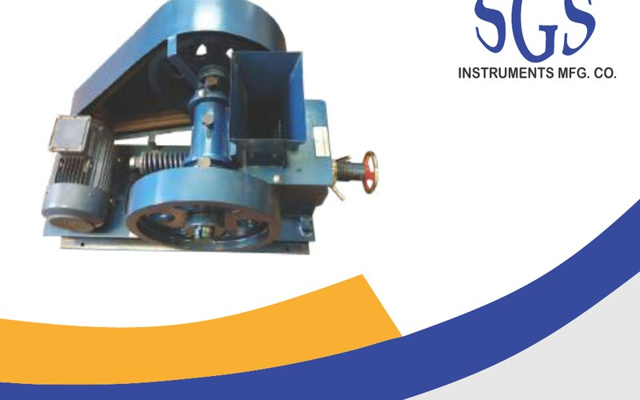

A trusted name in precision laboratory testing equipment — manufactured in New Delhi and supplied across India.

Who We Are
SGS Instruments Mfg. Co. is a New Delhi-based manufacturer and supplier of precision laboratory testing equipment, serving quality control, research, and educational laboratories across India for decades.
We specialize in instruments used for testing and processing soil, cement, concrete, aggregate, minerals, coal, steel, bitumen, fuel, paints, and general laboratory applications. Every instrument we manufacture is built to perform consistently under demanding laboratory conditions.
Our equipment is trusted by power plants, cement manufacturers, geological institutes, research universities, and quality control labs nationwide. We take pride in combining robust engineering with reliable Indian motor brands and IS Standard compliance.
Get in TouchOur Expertise
Our instruments are at work in laboratories and quality control facilities across a broad range of industries throughout India.
HGI machines, coal pulverizers, abrasive index testers, and fineness samplers for thermal power plant fuel analysis and quality control.
Ball mills, jaw crushers, muffle furnaces, and hot air ovens for cement plant laboratories and ready-mix concrete quality testing.
Jaw crushers, roll crushers, disc pulverizers, sieve shakers, and proving rings for ore processing, mineral testing, and geological sampling.
A comprehensive range of instruments for university research laboratories, geological institutes, IITs, and R&D facilities requiring precise, reproducible results.
IS-compliant instruments for NABL-accredited testing laboratories, third-party inspection agencies, and in-house factory QC facilities.
Ball mills for pigment grinding and paint testing; muffle furnaces and ovens for ceramic, tile, and granite powder production applications.
Quality Assurance
Every SGS instrument is manufactured with a focus on accuracy, repeatability, and long service life.
Our coal testing instruments — including the Abrasive Index Machine and HGI Machine — comply with relevant Bureau of Indian Standards (IS) specifications, including IS 9949:1986.
For proving rings and other calibration instruments, NPL (India) and NCCBM calibration certificates can be arranged at additional cost — essential for NABL-accredited labs.
We use only Kirloskar, Crompton, and Bharat Bijlee motors with BCH make starters — proven industrial brands with wide service networks across India.
Alloy steel jaws, gun-metal bushings, ceramic fibre insulation, powder-coated casings — materials selected for longevity under continuous laboratory use.
Our Manufacturing Range
SGS Instruments manufactures and supplies testing instruments for the following applications: